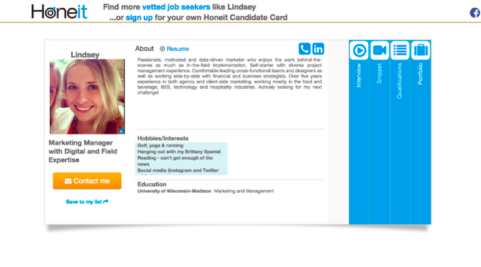
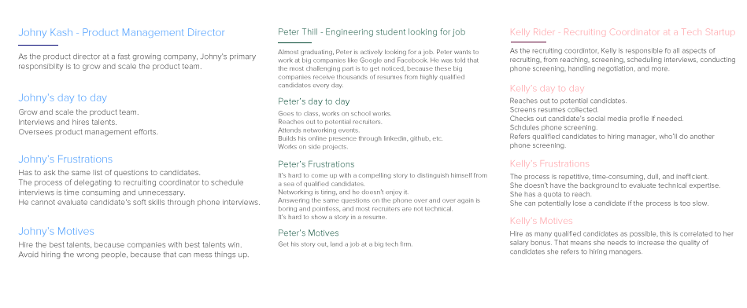
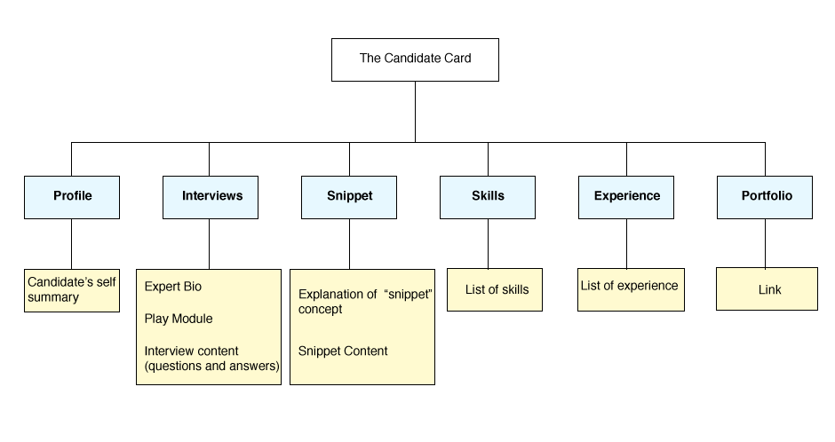
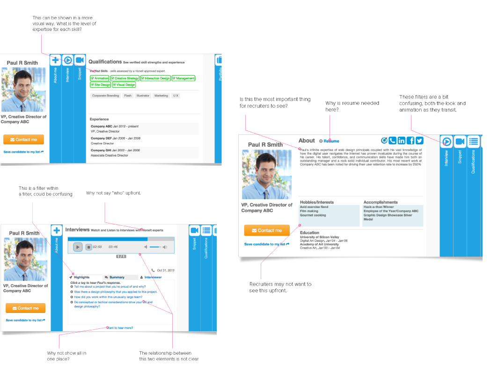
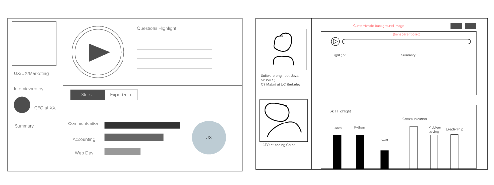
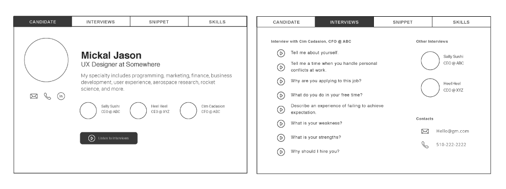
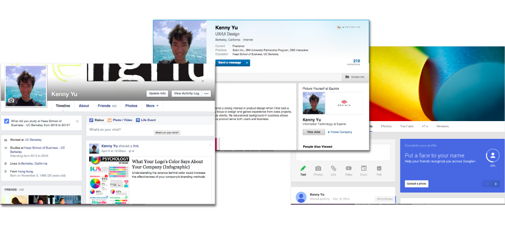

Honeit
Honeit is a platform that connects job seekers, industry experts, and recruiters. The platform allows job seekers to schedule phone interviews with industry experts. These interviews can be viewed and listened by recruiters. The main value proposition of the platform is to make the screening process more efficient for both job seekers and recruiters. Visit Honeit.
My Role
I contracted with Honeit for a month, during which I collaborated with Jeremy Santy on redesigning a key feature: Candidate Card

Objective
The key value proposition of Candidate Card is to let job seekers tell their stories effectively; and on the other side, let recruiters effectively screen candidates.
Persona
As with all designs, I started the process with writing persona to help me understand people's day-to-day, frustrations and motivations as relate to the product. Examples of personas I wrote:

Challenge
One big challenge is that the Candidate Card has to contain a lot of information:

To add to the chaos, Honeit product owners insisted that they wanted an "above-the-fold" design, meaning they don't want any scrolling. They believed that such design was easier for users and would distinguish the product from other social profiles such as Linkedin.
Scrolling vs Clicking
Inevitably, the tradeoff of "not scrolling" is "more clicking." To probe their assumptions, I researched literatures on scrolling vs clicking and their effect on user behaviors. Most findings pointed to the fact that scrolling is generally easiler for users because scrolling means continuation, while clicking means decision. Although I presented these findings to product owners, they still insisted on "above-the-fold" design. As freelancers, we decided to move on accordingly.
Main Design Concepts
(1) To let candidates establish credibility.
(2) To let recruiters understand candidates' information easily.
Reviewing Current Design
Looking at the existing interface allowed me to understand better what the product owners wanted to include in the candidate card, as well as discovering problems and shortcomings.

Wireframes and Iterations
Jeremy and I started sketching our ideas out. We iterated seperately, but synced up with each others every week.

These iterations allows recruiters access interviews immediately after landing.
I was trying to optimize the ease of access for recruiters because they have to screen a lot of candidates everyday. As such, I wanted them to be able to access interviews immediately as they land on the card. The above iterations also enables multi-tasking: recruiters can use the filter to browse "experience" and "skills" sections while listening to the interview.
Business Strategy and Design
During our weekly design reviews, the product owners expressed that they wanted to focus more on the use case where candidates use their cards to reach out to recruiters, instead of recruiters atively searching and screening candidates on the platform. With this context in mind, I trimmed down the ease of access to interviews and decided to show "profile summary" first.

Shows profile summary first. Recruiters will have to spend a click if they are interested.
Multiple Interviews, Universal Access, and Personal Branding
Product owners added 3 more requirements.
(1) The card should be able to contain more than one interviews.
(2) Have the candidate information universally accessible during the browsing experience
(3) More flexibility for the candidates to create personal branding elements, such as a customizable background image.

After some more discussions, we decided to go with some forms of variations of the above iterations.
The Visuals
As we started to mock up visual details, I researched on some popular "profiles" layout structures and visual elements.

Facebook, Linkedin, G+ profiles.